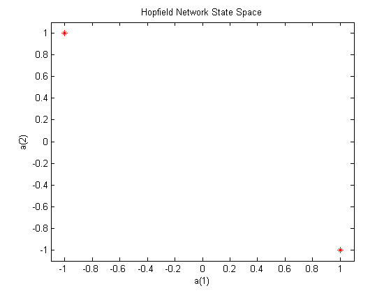
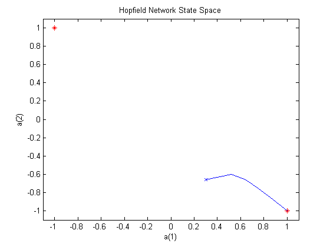
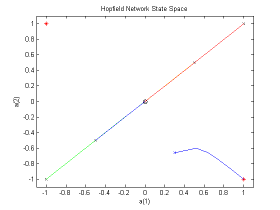

Hopfield Unstable Equilibria
A Hopfield network is designed with target stable points. However, while NEWHOP finds a solution with the minimum number of unspecified stable points, they do often occur. The Hopfield network designed here is shown to have an undesired equilibrium point. However, these points are unstable in that any noise in the system will move the network out of them.
We would like to obtain a Hopfield network that has the two stable points define by the two target (column) vectors in T.
T = [+1 -1; ...
-1 +1];
Here is a plot where the stable points are shown at the corners. All possible states of the 2-neuron Hopfield network are contained within the plots boundaries.
plot(T(1,:),T(2,:),'r*') axis([-1.1 1.1 -1.1 1.1]) title('Hopfield Network State Space') xlabel('a(1)'); ylabel('a(2)');
The function NEWHOP creates Hopfield networks given the stable points T.
net = newhop(T);
Here we define a random starting point and simulate the Hopfield network for 50 steps. It should reach one of its stable points.
a = {rands(2,1)};
[y,Pf,Af] = sim(net,{1 50},{},a);
We can make a plot of the Hopfield networks activity.
Sure enough, the network ends up in either the upper-left or lower right corners of the plot.
record = [cell2mat(a) cell2mat(y)]; start = cell2mat(a); hold on plot(start(1,1),start(2,1),'bx',record(1,:),record(2,:))
Unfortunately, the network has undesired stable points at places other than the corners. We can see this when we simulate the Hopfield for the five initial weights, P.
These points are exactly between the two target stable points. The result is that they all move into the center of the state space, where an undesired stable point exists.
plot(0,0,'ko'); P = [-1.0 -0.5 0.0 +0.5 +1.0; -1.0 -0.5 0.0 +0.5 +1.0]; color = 'rgbmy'; for i=1:5 a = {P(:,i)}; [y,Pf,Af] = sim(net,{1 50},{},a); record=[cell2mat(a) cell2mat(y)]; start = cell2mat(a); plot(start(1,1),start(2,1),'kx',record(1,:),record(2,:),color(rem(i,5)+1)) drawnow end